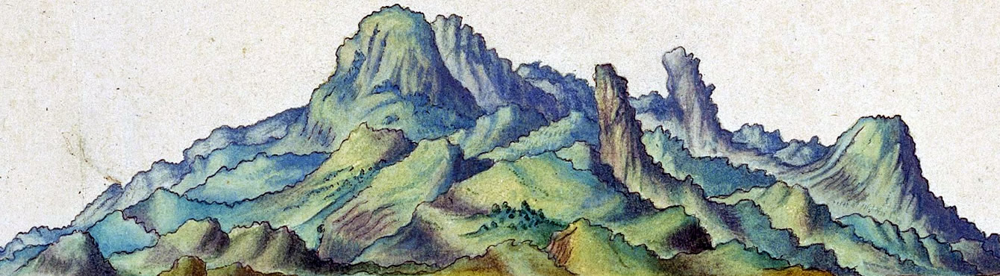
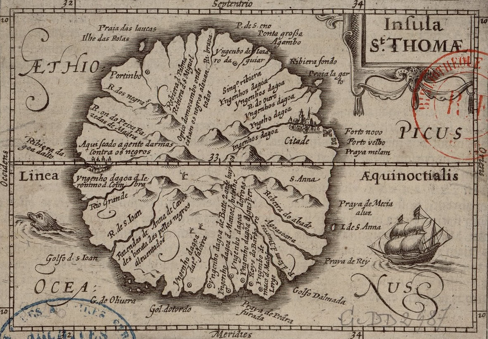
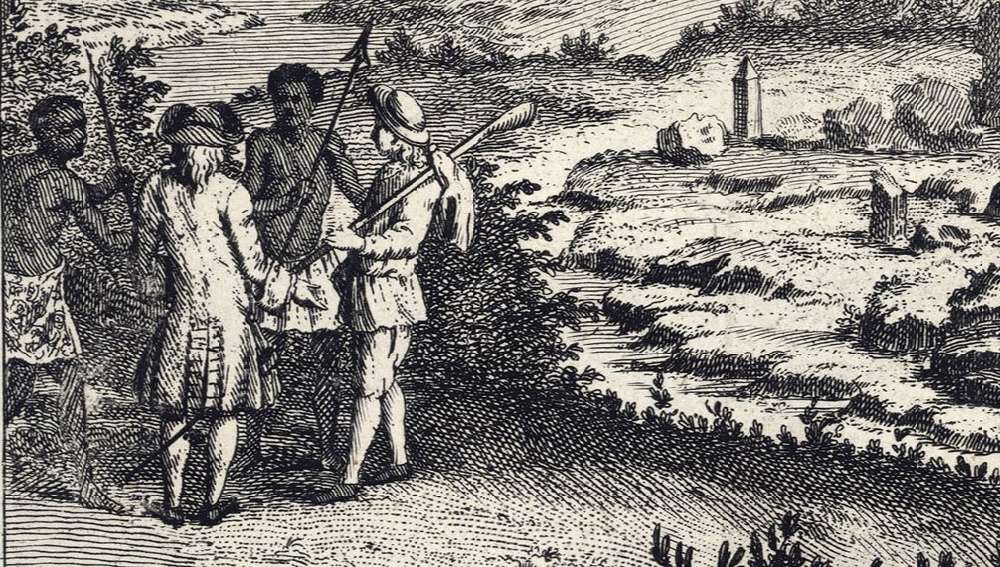
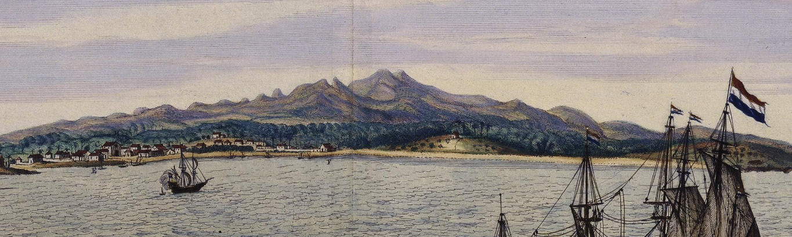
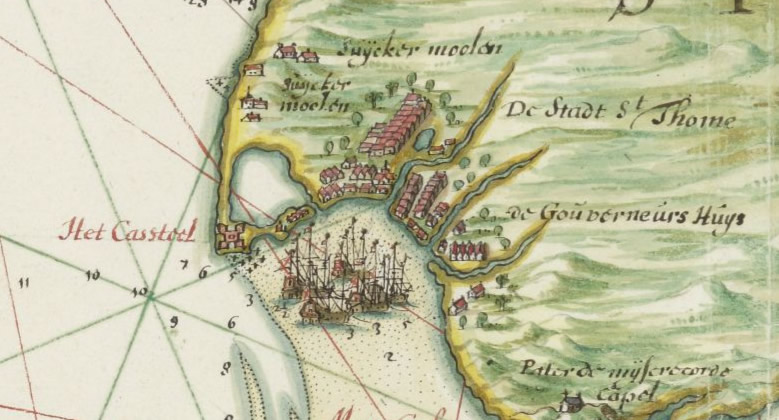
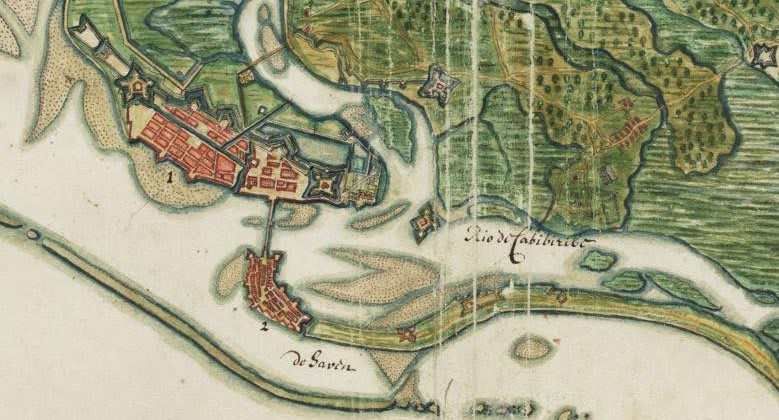

Qual o sentido de estudar a cidade do Recife se não se sabe como se forma seu povo? Além dos nativos, três portos tiveram importância gigante na formação do nosso jeitinho. O jeito que a gente se comporta, o jeito que a gente brinca, como a gente
organiza nossa vida.
Em África, os povos em contato com aquelas caravelas enxergavam a praia, os portos, como portais de transporte para outras dimensões. Tal como os filmes de ficção científica em que a gravidade puxa as naves em saltos dimensionais, a ganância do homem
branco das caravelas serviu como gravidade e arrancou aqueles povos de suas realidades. Muitos não completaram a travessia.
Esse portal, a praia, era a kalunga. No último texto discutimos como a Guiné foi a primeira praia invadida por essa cruzada. Hoje vamos mais ao sul.
🌊🌊🌊
🦀 Kalungas: São Tomé
O mar. A morte. Esta água! Esta água salgada é perdição. O mar vai muito longe, por aí fora. Até tocar o céu. Vai até a América. Por cima, azul, por baixo, muito fundo, negro. Com peixes, monstros que engolem homens, tubarões. O primo Xico tinha
morrido sobre o mar quando a canoa se virou ali no mar grande. Morreu a engolir água. Kalunga. Depois vieram os navios, saíram navios. E o mar é sempre Kalunga. A morte. O mar tinha levado o avô para outros continentes. O trabalho escravo
é Kalunga. O inimigo é o mar.
- Agostinho Neto

Vista da costa norte da ilha de São Tomé.
A cruzada cristã havia atingido Angola. Meio do caminho entre essas novas terras e a costa da Guiné estava o arquipélago, São Tomé, ilhas carinhosamente apelidadas de "cabecinhas de alfinete no Atlântico" pela poetisa local Alda do Espírito Santo.
Quando atingido pelas caravelas, o arquipélago de São Tomé foi visto como localidade estratégica para expansão do cultivo da cana-de-açúcar, já iniciada nas ilhas da Madeira.
A localização do arquipélago de São Tomé e Príncipe.
São Tomé ganhou fazendas de açúcar no mesmo período que Pernambuco. Trabalho escravo fazia aquelas fazendas produzirem. Logo, deduzimos o potencial infeliz de um arquipélago de terras férteis à cana localizado entre o continente africano e as demais
colônias cristãs: São Tomé se transformou em um porto de escravizados. Por lá desembarcaram milhares de pessoas, isolados pelo oceano longe de seus lares, e cujo destino seria ou a servidão nas fazendas locais ou o embarque para o continente americano.
Poucos escravizados se fixaram naquelas ilhas.
Nesse mesmo barco gigante, onde muitos africanos (muitos e muitos) foram entregues ou tragados por Kalunga, outros, muitos e muitos também se salvaram. O mar, contudo, é também promessa. Ali se guarda a esperança, a possibilidade da volta. Enfrenta-se
novamente a imensidão e os mistérios de Kalunga para reencontrar a Terra-mãe. Corpos jogados ao mar, corpos se jogam no mar, o mar guardando corpos. Mar, espaço de morte e de ressurreição. Hoje a travessia é feita pela memória.
- Conceição Evaristo

Mapa da Ilha de São Tomé em 1616 por Barent Langenes.
Organização Popular
Em 1529 escreveram ao governador da ilha que negros tem fugido
constantemente das fazendas. Longe do porto, o centro administrativo, e para dentro das fazendas, escravizados se articulavam e organizavam grandes fugas. Não é que não havia fiscalização branca, mas eram muitas, muitas pessoas, para se
conseguir manter sob controle.
Para se ter perspectiva, na época da carta ao governador, quatro mil africanos dos reinos das regiões de Angola, Benim e Congo eram levados até aquele porto anualmente. Dois mil africanos habitavam de forma fixa na ilha, seis mil serviam temporariamente
enquanto esperavam ser arrematados para outros portos: Havana, Cartagena, Salvador ou... Recife.
Em contraste, a ilha abrigava apenas 650 cristãos brancos. Eram em torno de 100 fazendas que eram atendidas por aquele porto, que exportava 60 mil arrobas de açúcar anualmente. Dentro desse "grande negócio", a fuga dos escravizados sinalizava um prejuízo
no horizonte. Algo deveria ser feito, mas precisaria de tempo. O corpo de repressão branca não era suficiente para controlar todas aquelas pessoas que em grupos fugiam da servidão, e o reforço dos colonizadores levaria muito tempo para chegar
ali, não havia tempo. Enquanto os cristãos se encontravam de mãos atadas, o povo se metia em revolta.

Recorte de "Ruínas da ilha de São Tomé", por Dirk de Jong.
Angola do Pico
A parte baixa da ilha estava toda ocupada pelas fazendas. Para garantir o sucesso das fugas, era necessário abrigar-se onde o controle branco era falho: os morros do sul da ilha. Três foram as comunidades estabelecidas, uma delas no ponto mais alto
da ilha, e se chamavam de Ngolas, talvez pelo significado de liberdade e força que a palavra carrega. Outra palavra utilizada para referir-se às comunidades é
mukambo, "a parte alta da casa", "cumeeira". Ambos os termos vêm da língua kimbundu, o idioma mais falado entre os habitantes.
Imagem de satélite da ilha de São Tomé. O norte é uma planície enquanto o centro-sul possui terreno acidentado.
As estatísticas no porto contabilizavam quatro mil indivíduos "fugidos" e o número só crescia. Com o passar dos anos nos mocambos angolares, como se chamavam as comunidades livres, as pessoas estabeleceram suas vidas e essas organizações ganhavam
mais poder com a chegada de mais refugiados.
Por vários motivos os colonizadores não conseguiram reunir forças para desmantelar os mocambos. Como São Tomé era um porto central para a redistribuição de escravizados, era mais lucrativo para os cristãos administrar os impostos sobre o tráfico humano
da ilha para outros portos. Acontece que São Tomé não possuia a mais organizada das administrações. Os brancos brigavam entre si disputando os direitos sobre os impostos do tráfico. Como retaliação entre as famílias envolvidas, incendiavam fazendas,
sequestravam ou matavam escravizados, induziam conflitos entre escravizados de fazendas diferentes, induziam conflito entre africanos livres (forros) e escravizados, ou saiam no murro entre si mesmo.
A ganância e soberba que essa ilusão de propriedade dava a esses senhores apenas servia de pano de fundo para o que realmente acontecia entre a maioria da população da ilha: o mocambo crescia. Enquanto as famílias brancas se destruiam por seus fuxicos,
pessoas organizadas levantavam uma cidade no topo das colinas.
🌄🌄🌄
Ação
Anos depois, pelo fim do século, um angolar chamado Amador organizou o plano definitivo: tomar a ilha. Dentro do costume cristão, as intrigas pessoais são falsamente relevadas diante do seu deus. Aos domingos, todos congregavam durante a missa, para
se amaldiçoarem logo ao fim. Esse era o momento que fazia a população branca vulnerável.
Em um daqueles dias de missa, os moradores dos mocambos desceram os morros em direção à igreja da ilha e a tomaram por assalto. Todos os brancos foram mortos. De lá partiram para incediar as fazendas da ilha, onde apenas 25 delas foram poupadas. Os
cristãos que resistiram foram os que se encontravam na fortaleza do porto. Tomada a ilha, inaugurou-se o reinado de Amador. Rei Amador.
Nos últimos anos do século, as desavenças entre os angolares, que ocupavam toda a ilha, provocadas ainda no tempo dos brancos, fragilizaram as relações entre os habitantes. Como golpe definitivo, em 1599, holandeses instalados na ilha vizinha de Príncipe
invadem São Tomé com 40 navios e tomam sua fortaleza. Era o fim do reinado, hoje lembrado no dia 4 de janeiro, quando se comemora o feriado nacional do Rei Amador no arquipélago de São Tomé e Príncipe.
Kalunga acorrentou gente nos porões e o povo apenas teve medo. Kalunga chicoteou as costas e o povo só curou as feridas. Kalunga é a fatalidade. Mas por que foi que o povo não fugiu do mar? Kalunga é mesmo a morte.
- Agostinho Neto
🌊🌊🌊

Visão do porto de São Tomé sob o controle dos holandeses. Frans Post, 1645.
São Tomé e o Recife
Do lado de cá do oceano, a notícia do que havia acontecido em São Tomé se espalhara nos círculos dos senhores coloniais. Da Bahia, um padre escreveu à coroa:
"E pode vir tempo em que se atrevam a acometer e destruir fazendas como fazem seus parentes da ilha de São Tomé."

Interpretação da cidade de São Tomé por Johannes Vingboons em 1665.
De conhecimento de como a palavra corria as colônias, a coroa monta uma banca de peritos para analisar o ocorrido no arquipélago e como isso poderia influenciar o comportamento nas outras partes do oceano. As decisões da banca deram origem a um novo
regimento com os nativos do Brasil, onde se proibiu seu cativeiro, ressignificando-os como aliados de forma precavida, a fim de que não se repetisse algo como o que ocorreu em São Tomé.

Interpretação da cidade holandesa e vila do Recife por Johannes Vingboons em 1665.
Com a proibição da servidão nativa, intensificou-se o tráfico de africanos. A decisão preventiva de fazer-se aliado aqueles nativos que conheciam a terra e de instrumentalizar essa aliança contra os escravizados não foi o suficiente para conter a
organização da população diaspórica africana pela costa do Brasil. O Rei Amador não havia caído em vão, poucos anos depois do fim do seu reinado vários outros mocambos organizados levantaram-se pelos interiores do continente americano em resistência
a exploração cristã branca. Tal comoção causada pelo pânico de possíveis revoltas africanas contra os brancos só se compararia ao medo branco após a formação do estado independente do Haiti.
A liderança do Rei Amador causou também aos colonos de Pernambuco pânico suficiente para dar início a uma caçada aos mocambos que se formavam no interior, os quilombos, os quais conheceremos melhor quando visitarmos a próxima kalunga.
Sobre os escombros da cidade morta
projectei a minha casa
recortada contra o mar.
Aqui.
Sonho ainda o pilar
uma rectidão de torre, de altar.
Ouço murmúrios de barcos
na varanda azul.
E reinvento em cada rosto fio
a fio
as linhas inacabadas do projecto.
- Conceição Lima
Fim da Parte 2
As Referências
- A história de São Tomé e da revolta do Rei Amador encontram-se na obra O Trato dos Viventes, de Luiz Felipe de Alencastro (2000);
- "África: âncora dos navios de nossa memória", por Conceição Evaristo (2012);
- "Dona Alda e Conceição Lima: uma geografia de paixões, afetos e memórias", por Carmen Lúcia Tindó (2008);
- "Quilombos on São Tomé, or in Search of Original Sources", por Jan Vansina (1996);
- Holandeses
em São Tomé e Príncipe.